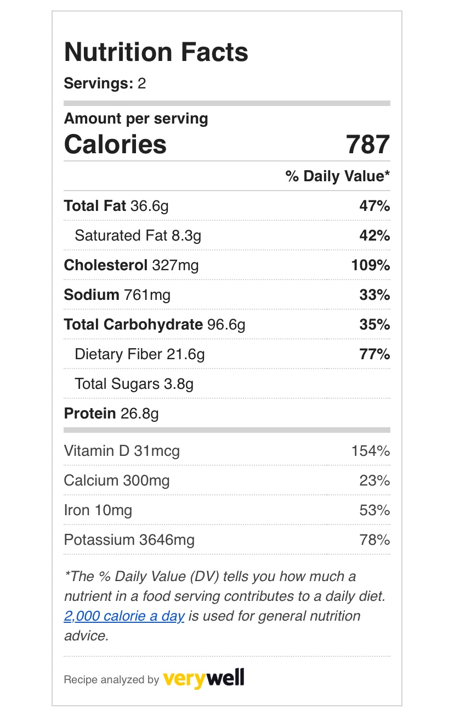

2 eggs
30g pumpkin seeds
10.5g wholegrain mustard
1 lemon
1 avocado
160g baby spinach
500g sweet potato
2 tsp tamari soy sauce
150g shredded kale
1 garlic clove
Step 1
Preheat the oven to 220°C/ 200°C (fan)/ gas 7
Boil a full
kettle
Peel and chop the sweet potatoes into
wedges
Add the sweet potato wedges to a tray with 1/2 tbsp [1 tbsp] olive oil and a pinch of salt
Put the tray in the oven and cook for an initial 15 min
Step 2
While the sweet potato wedges are cooking, cut the lemon[s] in half
Combine the juice of 1/2 [1] lemon with half [all] the wholegrain mustard, 1 tbsp [2 tbsp] olive oil and a pinch of salt and pepper in a small bowl - this is your mustard dressing
Tip: Cooking for 2? Save the remaining wholegrain mustard for another recipe!
Cut the remaining lemon into wedges
Step 3
Add the eggs to a
pot of boiled water with a pinch of salt over a
high heat (salt prevents the eggs from cracking)
Once boiling, boil for exactly 8 min for perfect, mid-boiled eggs
Once done, drain, then refill the bowl with ice-cold water and set them aside to cool
Tip: Use the Gousto ice packs to chill the water!
Step 4
Heat a large, wide-based pan (preferably non- stick with a matching lid) with 1/2 tbsp [1 tbsp] olive oil over a medium heat
Wash the shredded kale, then pat it dry with kitchen paper
Once hot, remove the pan from the heat, add the shredded kale with a pinch of salt, then return the pan to the heat and cook for 3-5 min or until starting to soften
Tip: Cover the pan with a lid to help the kale wilt
Step 5
Peel and finely chop (or grate) the
garlic
Wash the spinach, then pat it dry with kitchen paper
Once the kale is starting to soften, add the spinach with the chopped garlic and cook for a further 3-4 min or until the kale is tender and the spinach is starting to wilt - these are your stir-fried greens
Step 6
Once the sweet potato wedges have had 15 min, remove them from the oven and push them to one side of the tray
Add the pumpkin seeds to the other side of
the
tray and drizzle over the tamari soy sauce
Return the tray to the oven for 5-7 min until the sweet potato is cooked through and golden and the seeds are toasted - these are your tamari-roasted seeds
Tip: Watch them like a hawk to make sure they
don't
burn!
Step 7
Peel the cooled boiled eggs and cut them in half
Cut the avocado(s] in half lengthways, around the stonels]
Remove the stone(s] using a teaspoon
Scoop the avocado out of the skin[s] using a spoon and slice thinly
Step 8
Serve the sweet potato wedges with the stir-fried greens, sliced avocado, halved boiled eggs and lemon wedge to the side
Drizzle over the mustard dressing and sprinkle with the tamari-roasted seeds
Enjoy!

Amount per serving
Calories 787
% Daily Value*
Total Fat 36.6g 47%
Saturated
Fat 8.3g 42%
Cholesterol 327mg 109%
Sodium 761mg 33%
Total
Carbohydrate 96.6g 35%
Dietary Fiber 21.6g 77%
Total
Sugars 3.8g
Protein 26.8g
Vitamin D
31mcg 154%
Calcium 300mg 23%
Iron 10mg 53%
Potassium
3646mg 78%